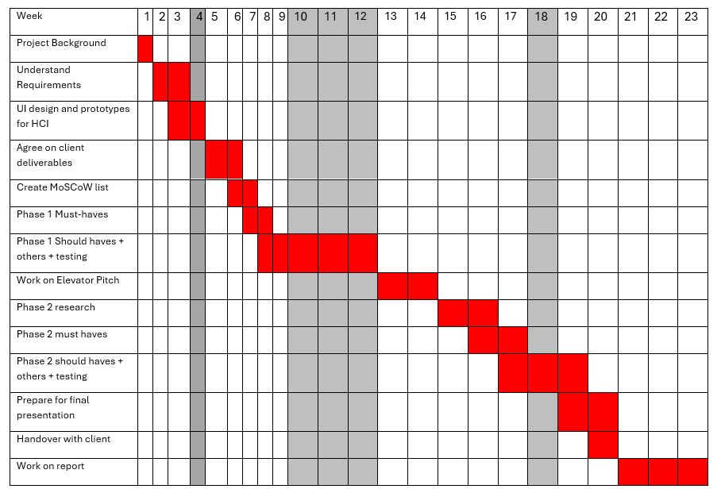

Project Title: Avanade and Ossia - Offline Speech Review and Dysarthric Offline LLM
Check out our GitHub repositories:
Abstract
Problem Statement
People with speech and motion disabilities, such as those living with Motor Neurone Disease, face severe communication challenges. OssiaVoice, an AAC (Augmentative and Alternative Communication) tool, currently depends on OpenAI’s API for generating text-based responses. This reliance introduces high costs, internet dependency, and privacy concerns, limiting accessibility for users who require offline functionality. Additionally, there is a need to analyse and compare various offline LLMs to determine the best alternative for OssiaVoice. This was also achieved through our RAG chatbot to mine local research documents for answers and simplify academic research.
Our Solution
The project is structured into two key phases:
- Phase 1: Literature Review LLM Tool – A Python and Tkinter-based tool that enables users to mine local PDFs for research insights working with GDIHUB. This tool helps in comparing and contrasting various offline Large Language Models (LLMs) for accuracy, efficiency, and hardware compatibility. We use phase 1 to review documents containing information surrounding various offline models. We use information gathered from our program to evaluate different speech engines and their best use cases. This information will be vital in helping us to choose correct offline models that will be suitable for a wide array of speech patterns for phase 2 of the project with Ossia.
- Phase 2: Offline OssiaVoice Implementation – We are modifying and improving OssiaVoice by replacing OpenAI API calls with offline models. We also plan to include various improvements and new additions, such as diarisation and personalised voice cloning for text-to-speech. This ensures lower costs, improved privacy, and greater accessibility for users who lack constant internet access.
Achievement & Impact
By providing an affordable, privacy-conscious, and fully offline AI solution, our project enhances accessibility for individuals with severe speech impairments. This work reduces reliance on costly online services while maintaining high-quality, AI-assisted communication, ultimately improving users’ ability to interact and maintain relationships.
Project video for both phase1 and phase2
Through the video, you will know what our project about, and see our demo showcase.
Development Team
Haocheng Xu
Email: haocheng.xu.23@ucl.ac.uk
Role: Team Leader, Programmer, Researcher, Report Editor
Zizhou Shi
Email: zizhou.shi.23@ucl.ac.uk
Role: Programmer, Researcher, Report Editor
Nigel Mathews
Email: nigel.mathews.23@ucl.ac.uk
Role: UI designer, Programmer, Researcher, Blog Writer, Report Editor
Neethesh Neethesh
Email: t.neethesh.23@ucl.ac.uk
Role: Programmer, Researcher, Report Editor
Project Management - Gantt Chart
This Gantt chart outlines the project's timeline from October 21, 2024, to March 28, 2025.